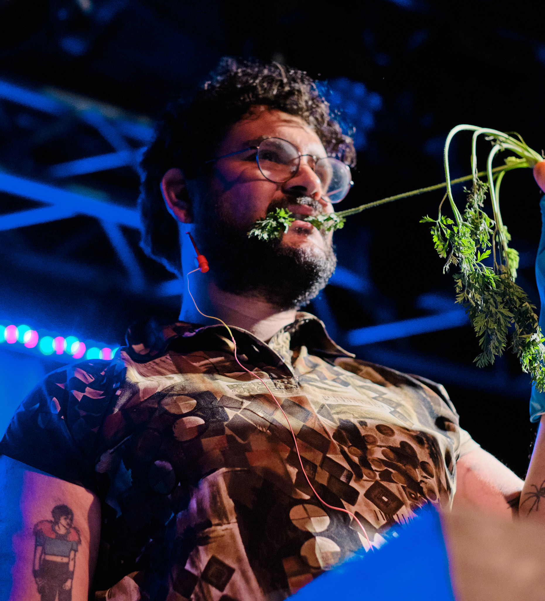

artworks


exhale
It was programmed during the COVID19 quarantine as a result of collective work and online research. Eventually, exhale became a live coding performance.
Frameworks: p5.Js, PureData, OBS.
Years: 2019 - ongoing.
Try it! Obs: it is necessary that you give permission to use the microphone in your device.

eop
This performance act is a take on commenting how we use our bodies in art and science projects. It was inspired by queer theory and the mixture of organic and digital realms we experience in every day life.
Frameworks: PureData, Arduino, Reaper.
Years: 2018 - ongoing.
touch
When touched by the hands of the audience, Peltier cells create energy by contrasting cold temperature with the human body’s natural warmth. The system triggers small engines that resonate inside glass objects, producing delicate sounds.
The work discusses the production of electric energy through minimalist techniques.
Technique: Soldering, assortment of electronic components.
Years: 2015 - ongoing.
Check out this video about the artwork.
Please come back again soon, this page will be updated!